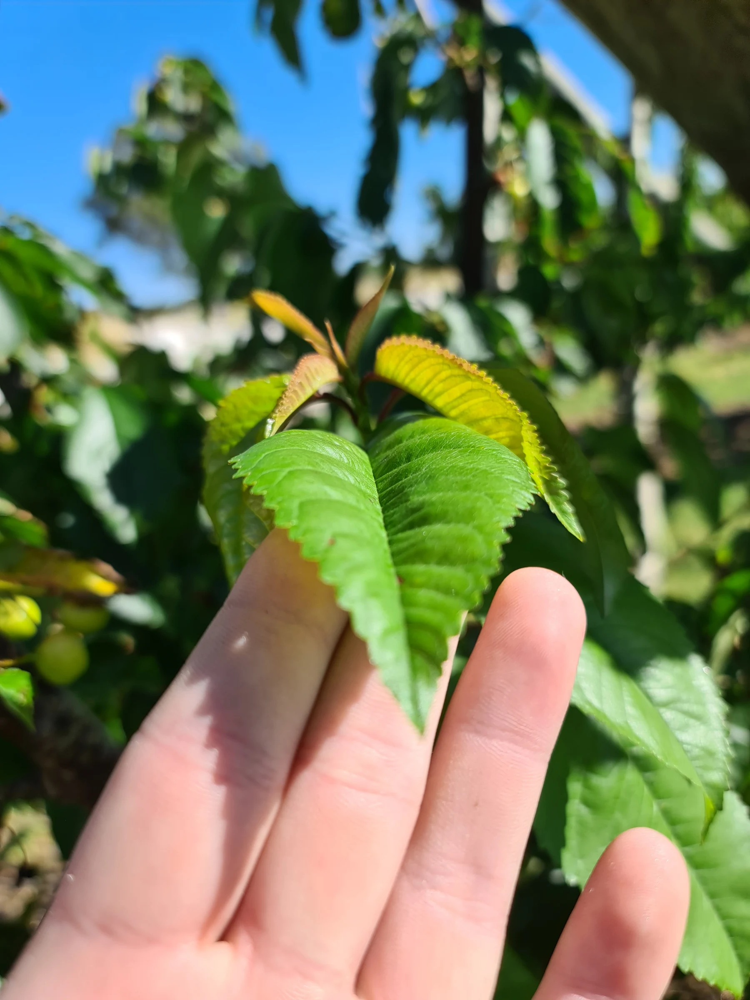
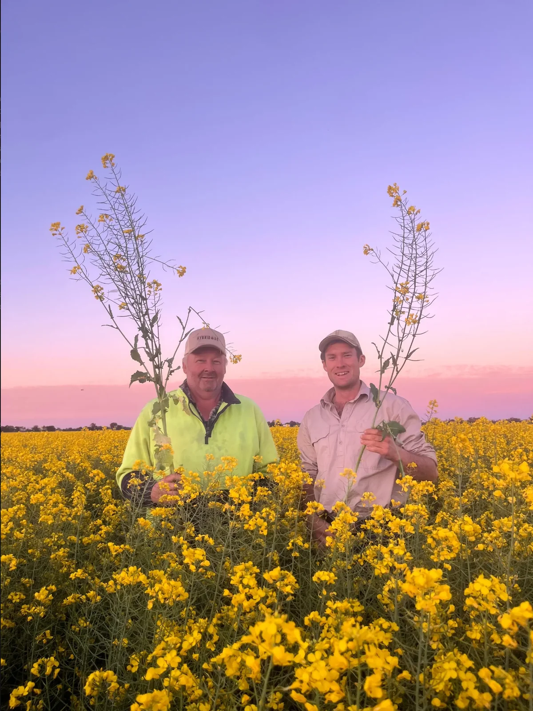
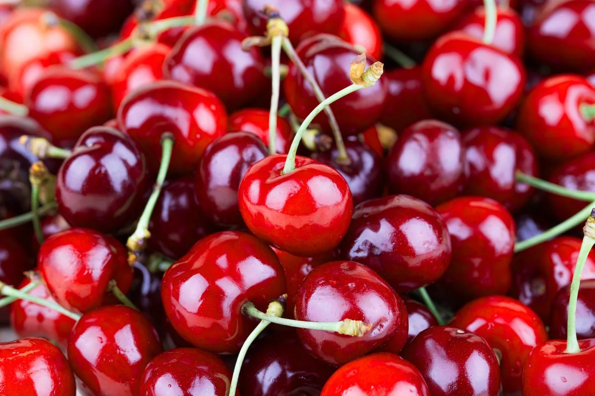
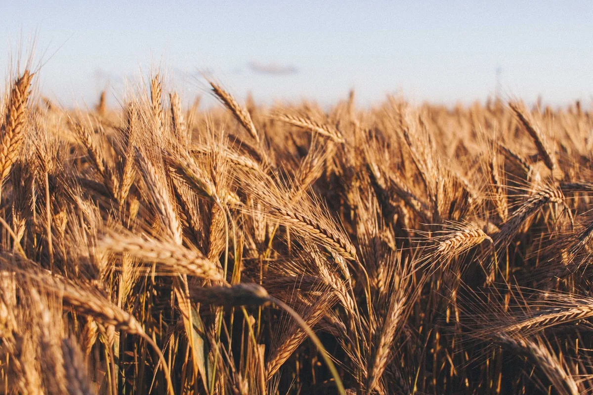
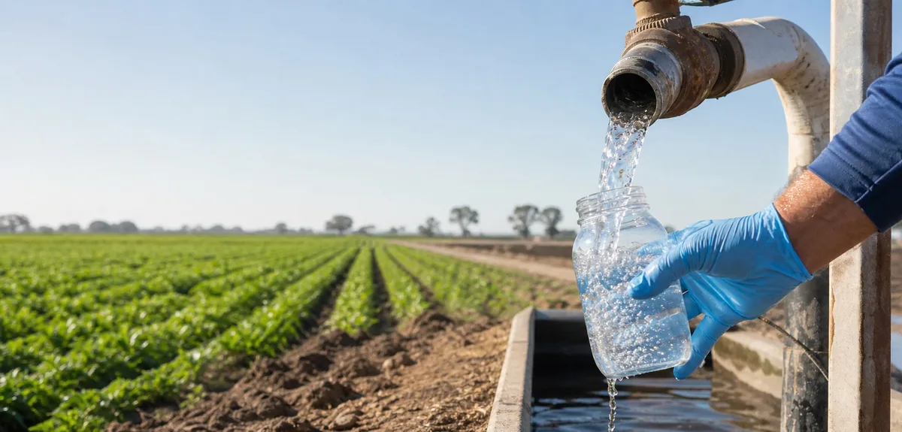
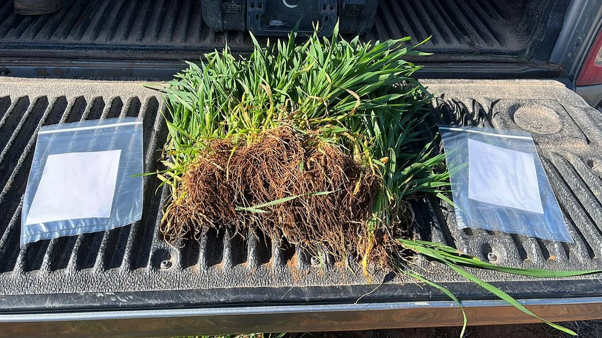
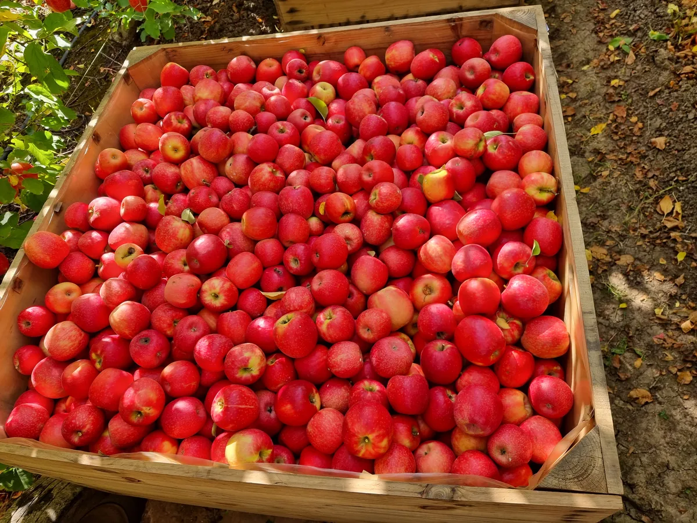
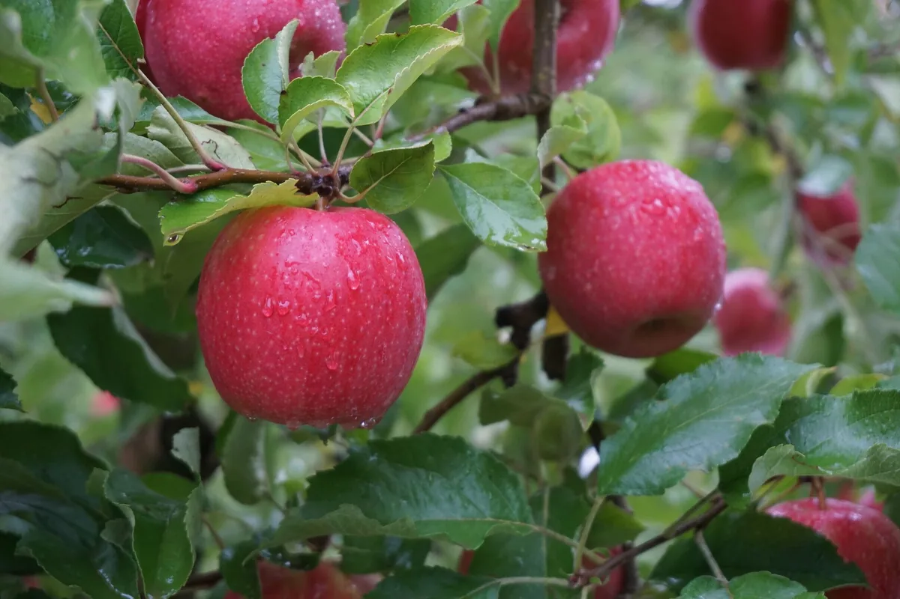

Optimising inputs, maximising outcomes.
Total soil and plant nutrition input systems customised for broadacre, horticulture, small crop and viticulture growers
Testing
We’ve built our business on testing rather than guessing. Our soil, leaf and tissue, Differential Sap Analysis, water and produce testing helps guide crop nutrition and prescription blends.


Small Crop
Grow healthier and more resilient crops with customised nutrient programs.
Learn More about Small Crop
Horticulture
Access nutrition management techniques and tailored solutions.
Learn More about Horticulture
Broadacre
Boost yields and set your crops up for success with a customised nutrition program.
Learn More about Broadacre
Viticulture
Maximise your vineyard’s potential through tailored solutions.
Learn More about ViticultureHear from our growers
Old Oak Orchards
Knowledge & experience
Explore all resources
From our agronomists.
Articles, crop guides and recordings from the Hybrid-Ag team.
Recordings

Video · Opens a new tab
Dry Season Broadacre Nutrition
A recording from the Hybrid-Ag team.
With James White
Video · Opens a new tab
Cherry Nutrition Webinar
Presented by Cherry Growers Australia.
With Andrew Smith
Video · Opens a new tab
Nitrogen Use Efficiency
A Loam-hosted webinar with the Hybrid-Ag team.
Bruce Armstrong · James White · Dr Anders Classens
Video · Opens a new tab
Dry Season Pasture Management
A recording from the Hybrid-Ag team.
With James WhiteGuides

Guide
What each test can tell you.
A guide to reading the results alongside the soil and crop being sampled.
Hybrid-Ag
Guide
Water is part of every foliar spray.
Understand the water report in the context of its intended use.
Hybrid-Ag
Guide
Make every sample a useful reference.
Keep the original report and sample details together for future crop nutrition decisions.
Hybrid-AgArticles

Article
Post-Harvest
Review yield, fruit quality and existing test results with the team before planning next season’s nutrition.
Hybrid-Ag
Article · Opens a new tab
Leading with purpose: James White’s lessons from the Marcus Oldham Rural Leadership Program
An article from the current Hybrid-Ag website.
By James WhiteCrop playbooks

Playbook · Review draft
Apple nutrition through the season.
Explore the Apple Nutrition Playbook and a sample program for review with the team.
Hybrid-Ag
Playbook · Review draft
Cherry nutrition through the season.
Explore the Cherry Nutrition Playbook and a sample program for review with the team.
Hybrid-Ag